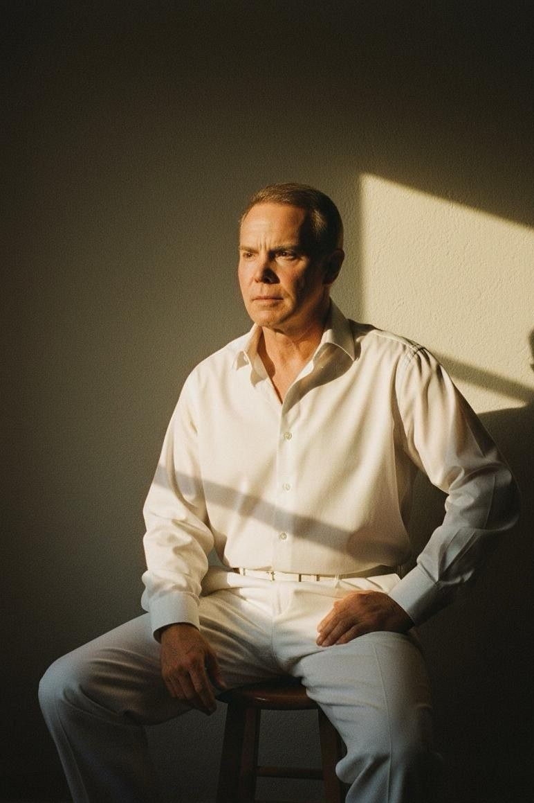
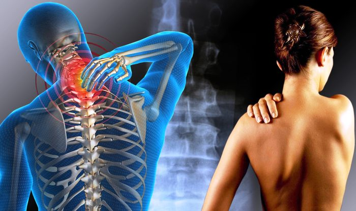
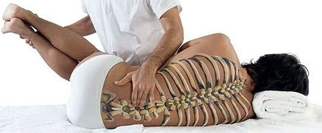
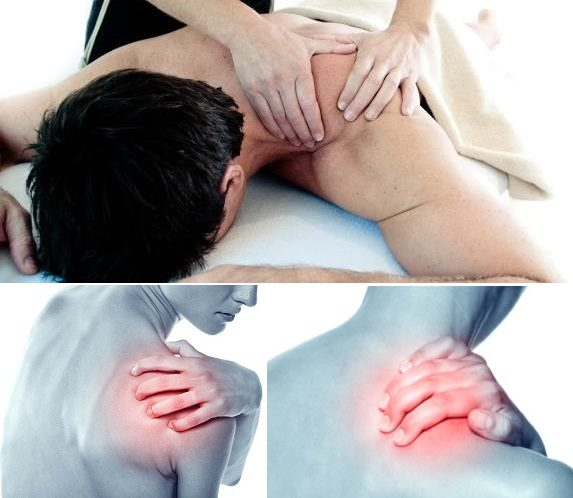
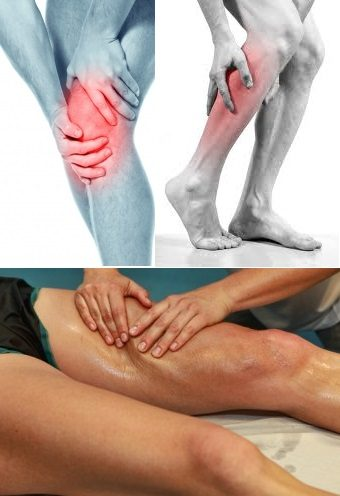
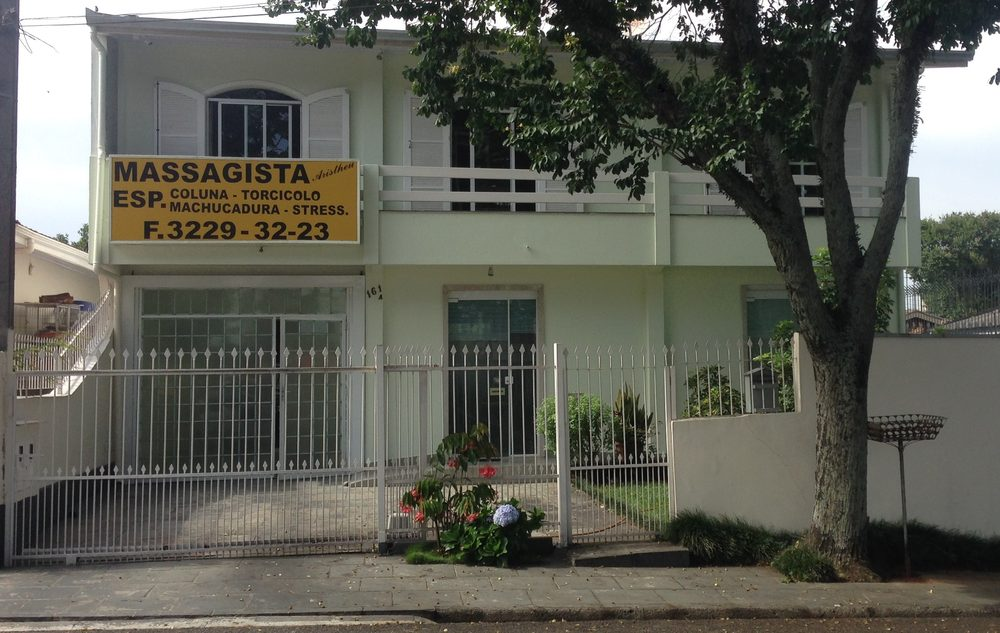
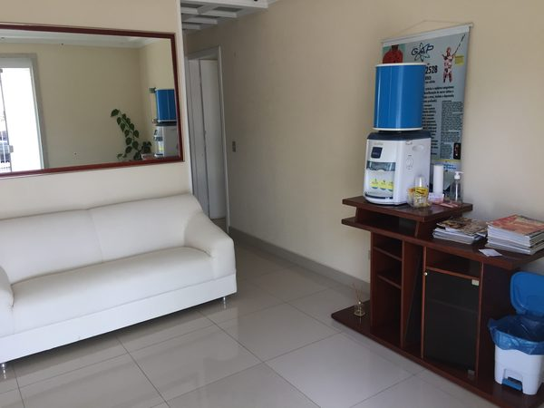
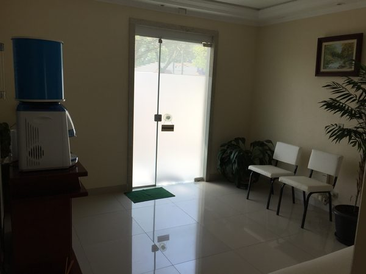
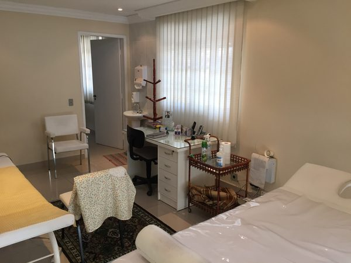
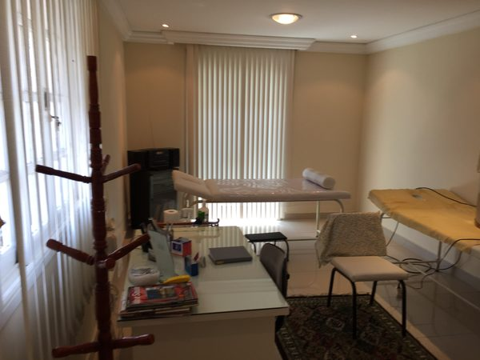

Massoterapia
O cuidado por meio de diferentes tipos de massagem, reunindo técnicas que promovem relaxamento, alívio de tensões e equilíbrio para o corpo.
Desde 1983 em Curitiba
Mais de quatro décadas dedicadas a aliviar dores, relaxar a musculatura e devolver qualidade de vida, com técnica, cuidado e atenção individual a cada pessoa.

Sobre o profissional
Natural do Rio Grande do Sul, Aristeu Vedoy começou a exercer a profissão de massagista em Curitiba em julho de 1983. Desde então, construiu uma trajetória sólida e se tornou referência em sua área, reunindo mais de 40 anos de experiência.
Ao longo desse tempo, especializou-se no tratamento de coluna, torcicolo, dores musculares e lesões, além de massagens antiestresse, terapêuticas e quiropraxia, sempre unindo a técnica apurada a um atendimento próximo, humano e atento às necessidades de cada pessoa.
O trabalho vai além do alívio momentâneo, é sobre bem-estar físico e mental, recuperação e a sensação de voltar a se mover com liberdade.
O que oferecemos
Diferentes técnicas para diferentes necessidades, sempre com foco no alívio da dor e na recuperação do bem-estar.
O cuidado por meio de diferentes tipos de massagem, reunindo técnicas que promovem relaxamento, alívio de tensões e equilíbrio para o corpo.

Massagens voltadas à melhora da saúde e à recuperação do corpo, aliviando desconfortos e devolvendo mobilidade e disposição.

Trabalho sobre o sistema neuromuscular por meio de movimentos da estrutura esquelética, ajudando a corrigir tensões e a aliviar dores.
Estimula o relaxamento profundo e a liberação natural de hormônios do bem-estar, reduzindo a tensão acumulada no dia a dia.
Alívio para cansaço nas costas, lombalgias e tensões musculares, com técnicas que relaxam e recuperam a musculatura.

Cuidado específico para a contração involuntária dos músculos do pescoço, aliviando a dor e devolvendo o movimento com conforto.

Ótima aliada para quem pratica exercícios: prepara a musculatura antes da atividade e auxilia na recuperação depois do esforço.
Nosso espaço
A clínica fica no bairro Portão, em Curitiba, num espaço tranquilo e acolhedor, preparado para que cada atendimento seja um momento de cuidado e descanso.





No Portão, um dos bairros centrais de Curitiba.
Atendimento de segunda a sábado, com hora marcada.
Cada pessoa recebe um cuidado personalizado.
Fale conosco
Entre em contato para marcar um atendimento ou tirar suas dúvidas. Será um prazer receber você.
Atendimento com hora marcada.